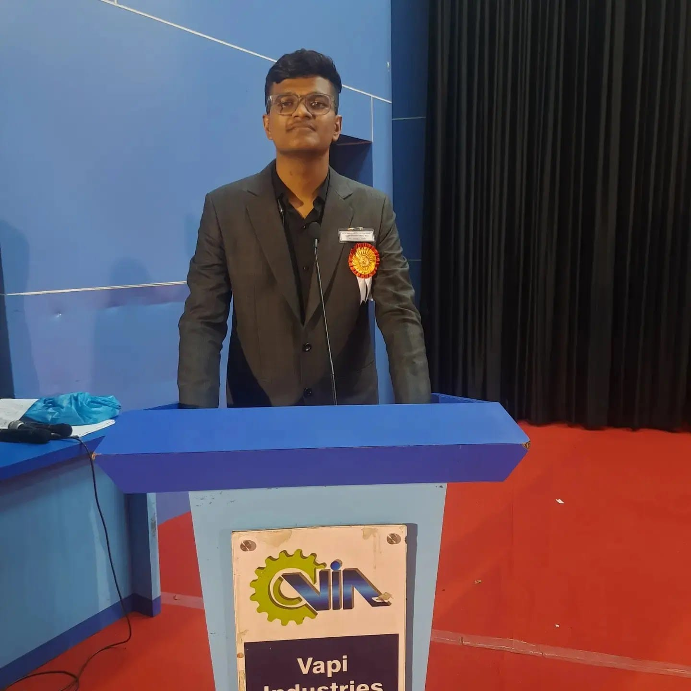

About the Author
Naitik Doshi is a student, educator and writer with a passion for sharing knowledge and inspiring others. With a background in Computer's and Literature, he aims to make complex topics accessible to everyone.
E-mail: 2405112130021@paruluniversity.ac.in
